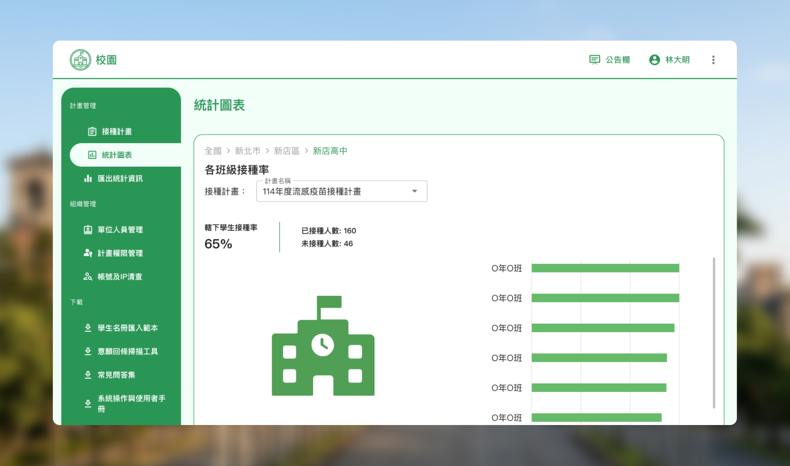
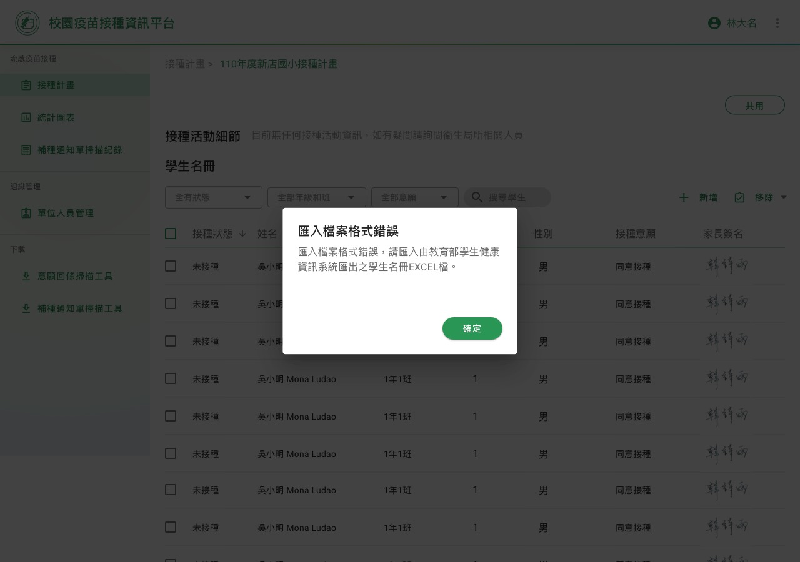
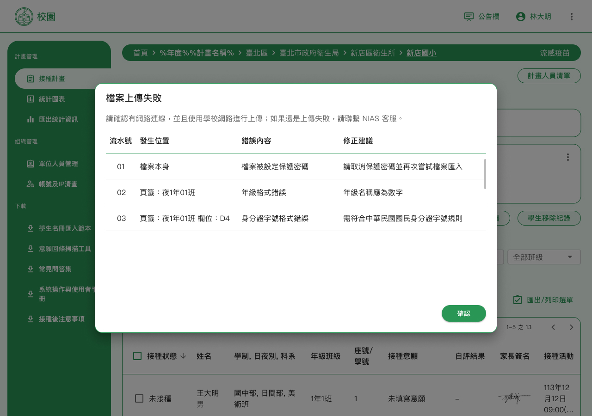
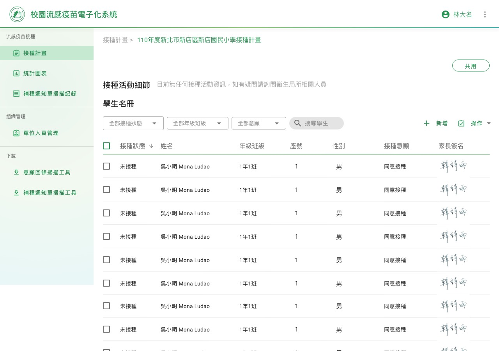
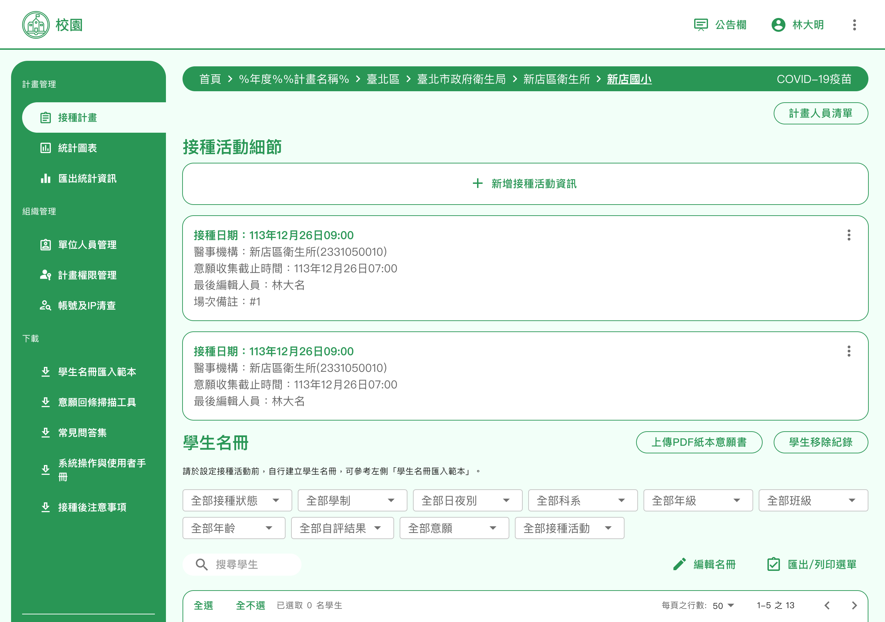
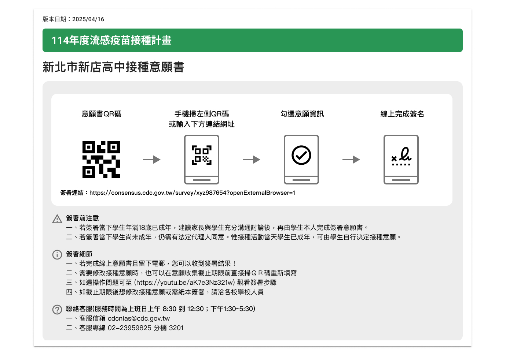

政府
醫療資訊系統
300萬+使用者
90% 滿意度
校園疫苗接種數位轉型
從紙本到雲端，打造智慧校園健康管理
全台推廣
從縣市試辦到全台所有學校
300萬+
家長完成線上意願填寫
90%
學校健康中心滿意度
2週→2天
意願書發送時間縮短

CHALLENGE
行政流程繁瑣，疫苗接種效率低落
在傳統的校園疫苗接種作業流程中，學校健康中心面臨著繁瑣且容易出錯的行政作業。
傳統作業流程
- 1 手動造冊並統計學生名單
- 2 聯繫醫事機構安排接種場次
- 3 印出紙本意願書發給各班級
- 4 等待班級導師發放並回收意願書
- 5 處理學生轉入轉出的名單變更
- 6 人工統計意願填寫結果
核心問題
- 耗時費力，整個流程需要數週完成
- 容易出現統計錯誤，影響疫苗採購數量
- 紙本文件容易遺失，需要重複處理
- 資料更新不及時，難以處理緊急狀況
PROCESS
三個階段改善系統體驗
1
需求收集與分析
實地訪談
實地訪談指標性學校，直接與校護溝通，了解第一線使用者的真實需求與痛點。
說明會收集反饋
舉辦北中南多場系統操作說明會，廣泛收集各地使用者的反饋與建議。
2
系統設計優化
學生名冊造冊功能
Before

- 僅提供籠統的描述錯誤
- 缺乏資料備份與還原機制
After

- 提供匯入範例與詳細說明文件
- 支援多種匯入方式
- 完整匯入錯誤說明
- 新增資料還原功能，避免誤刪
接種場次安排功能
Before

- 僅能安排單一場次
- 不支援批次指派場次
After

- 支援多場次同時安排
- 提供批次勾選與指派功能
- 場次參數設定介面，提升管理效率
意願書簽署介面
Before
- 資訊分散，不易閱讀
- 缺乏資訊分組與層級
After

- 將相關資訊群組化呈現
- 簡化資訊架構，提升可讀性
3
持續優化與支援
3,600+
建立專線服務，2023年收集超過3600條使用意見
Issue 追蹤機制
建立issue追蹤機制，定期排定優先處理順序
持續優化
根據使用者反饋持續優化系統功能
OUTCOMES
全台推廣，改變校園健康管理方式
300萬+
家長完成線上填寫
90%
學校健康中心滿意度
80%
學生名冊管理效率提升
70%
接種記錄管理時間減少
- 意願書發送時間從2週縮短至2天
- 意願統計作業自動化，免除人工計算
- 線上填寫意願書，免除紙本遺失問題
- 精準掌握疫苗需求，優化政府採購分配
下一個案例
醫療 · 企業 SaaS